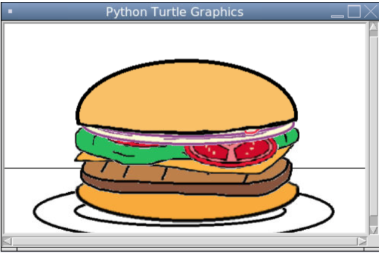

Project 1.1.9.
 This is a project my partner and I made where you would be able to customize your own burger.
After you run the program it would greet you and then ask you a series of yes or no questions
It would ask if you wanted a certain ingredient on your burger and afterwards it asks you how many of those ingredients you want
After you answer all the questions the program gives you, your burger should be ready.
1.2.5 Project.

"Candy Catch" is the name of the game that my team and I created. Basically in our game there are candies moving from left to right on a loop and the whole point of the game is to try and time the candy into the basket.In order to drop and time the candy into the basket you have to click on the screen.Everytime you make one in the basket a new random candy will be at the top and the score will go up by 1.You lose if you miss the basket once, and afterwards there is a game over sign. A little special suprise we added to our game is when you get a score of 10 then you get a minion as one of your candies.
Scratch Project.
1.2.5 Project.
"Candy Catch" is the name of the game that my team and I created. Basically in our game there are candies moving from left to right on a loop and the whole point of the game is to try and time the candy into the basket.In order to drop and time the candy into the basket you have to click on the screen.Everytime you make one in the basket a new random candy will be at the top and the score will go up by 1.You lose if you miss the basket once, and afterwards there is a game over sign. A little special suprise we added to our game is when you get a score of 10 then you get a minion as one of your candies.